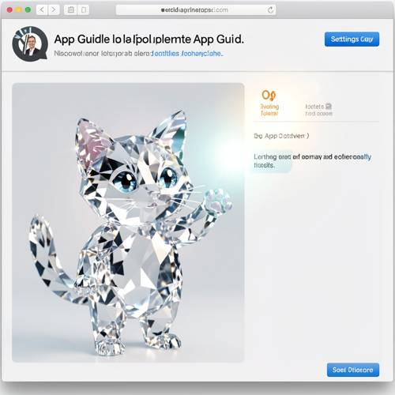
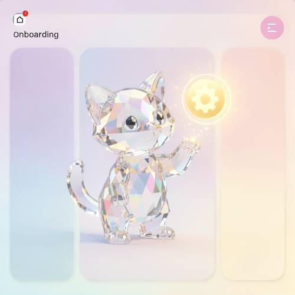
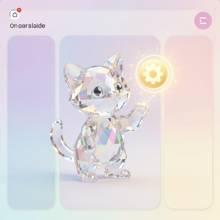
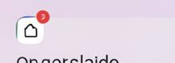
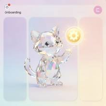
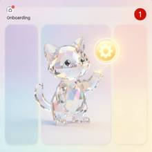
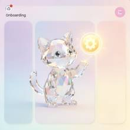
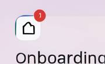

Compound — On an App guide page, a kitten made of crystal had a curious expressio
On an App guide page, a kitten made of crystal had a curious expression and waved its paw to light up a glowing settings button in the air.

Direct — one call, no iteration

Continuum — Qwen3.8-27B + FLUX.2-klein-9B
Judge — Direct
PASSCompound - Imagination — The image displays a kitten-like figure composed of transparent, faceted material, consistent with the appearance of crystal. This is a creature that does not exist in reality.
FAILAction - Non-contact Interaction — The crystal kitten is depicted with one paw raised towards a bright, glowing light. However, there is no visible "settings button" in the air that the kitten is lighting up. The object of the interaction as described in the prompt is missing.
PASSAttribute - Expression — The kitten has large, wide eyes, a slightly tilted head, and a neutral mouth, which collectively convey an expression of curiosity.
PASSAttribute - Material — The kitten's body is rendered with numerous flat, geometric facets and is transparent, accurately representing the material properties of crystal or a cut gemstone.
PASSAction - Hand (Character/Anthropomorphic) — The kitten's left paw is raised in a clear waving gesture. The paw is well-formed with distinct, faceted pads and does not appear distorted or broken.
Judge — Continuum
PASSCompound - Imagination — The image shows a kitten figure that is not real, as it is composed of a faceted, transparent material resembling crystal.
PASSAction - Non-contact Interaction — The crystal kitten has its right paw raised towards a glowing yellow button. There are small, sparkling light particles between the paw and the button, visually suggesting a non-contact interaction that is causing the button to be lit.
PASSAttribute - Expression — The kitten has large, wide-open eyes and its head is slightly tilted, which gives it a curious expression.
PASSAttribute - Material — The kitten figure is rendered with multiple flat, geometric facets that reflect and refract light, accurately depicting the texture and appearance of crystal.
PASSAction - Hand (Character/Anthropomorphic) — The kitten's right paw is raised in a clear waving gesture. The paw is stylized and faceted, consistent with the rest of the body, and its structure is complete and not distorted.
What the agent did
Thinking
Let me parse this prompt: "On the app's guide page, a crystal-made kitten has a curious expression and waves its front paw to light up a floating glowing settings button in the air." So the scene is: an app's guide page (like an onboarding/tutorial UI screen) features a crystal-made kitten (gemstone/crystal cat), with a curious expression (wide eyes, tilted head), waving its front paw toward a glowing settings button floating in the air (like a gear icon button). Should generate with flux2-klein. Let me write a detailed visual prompt. Key elements: 1. App guide page context — phone screen/UI, onboarding card, "Step 1" or guide UI elements, app onboarding page design. 2. Crystal-made kitten — a cat made of translucent crystal/gemstone, faceted, iridescent, glass-like. 3. Curious expression — wide bright eyes, slightly tilted head, perked ears. 4. Waving front paw — one paw raised, mid-wave. 5. Glowing settings button in the air — a glowing gear icon button floating near the paw, being illuminated/touched, with a soft glow/sparkle emanating from it. Composition: mobile app guide page — the kitten is the mascot on the screen. Should I render it as a smartphone screen displaying a guide page, or render the guide page itself full-frame? "On the app's guide page" suggests the image depicts a guide page UI. Let me make a full-frame mobile app UI: a cute onboarding card with the crystal kitten as the mascot, waving at a glowing gear button floating in the air, with soft sparkles, clean modern app design, pastel gradient background. Text: I could add guide text like "Welcome!" or "Settings" on the button. Rendering text is risky; the settings button can be a gear icon without text. Keep text minimal to avoid garbled letters — maybe a small "Get started" pill. No, to be safe, let's use icon-based only, or minimal text. The prompt doesn't explicitly require text. A guide page often has text, but rendering text risks failure. I could try small "Welcome" text, but... per the instructions, verify rendered text on zoom. Safer to go with no text, or minimal decorative dots. Let me include a small "Welcome" text... no, let's keep it icon-based: the gear icon for the settings button is a strong element. The guide page can have UI chrome elements (progress dots, a "Step 1/3" card) without readable text. Let me generate: Prompt: "A mobile app onboarding guide page, clean modern UI design, soft pastel gradient background. In the center, a small kitten made entirely of translucent faceted crystal, gemstone-like, sparkling with iridescent internal glow, sitting cutely with head tilted and wide curious sparkling eyes. The crystal kitten waves one paw upward. In the air in front of the outstretched paw, a glowing circular settings button with a gear icon floats, the button lights up bright and emits a soft golden glow and tiny light particles where the kitten's paw approaches it. Cute, dreamy, high detail, 3D render style, soft studio lighting." Size: default 1024x1024. The harness controls size; leave it at default. After that, inspect, verify the kitten's expression (curious — wide eyes, tilted head), the waving paw, the glowing settings button with the gear icon. If the gear icon is off, edit. Let's get started.
Step 1 — `generate_image`
{
"model": "flux2-klein",
"prompt": "A mobile app guide page, clean modern onboarding UI, soft pastel gradient background with rounded card panels. In the center sits an adorable small kitten sculpted entirely out of translucent faceted crystal, gemstone-like, with sparkling iridescent internal glow and prismatic reflections. The crystal kitten has a curious expression: head tilted to one side, ears perked, large wide sparkling eyes. It waves one front paw upward. In the air just in front of the raised paw floats a glowing circular settings button with a gear icon, the button lit up brightly, radiating soft golden light and tiny light particles and sparkles where the kitten's paw reaches toward it. Cute dreamy 3D render, soft studio lighting, high detail."
}
Result img_0

Thinking
Let me check the result: 1. Crystal kitten ✓ — translucent faceted crystal cat, iridescent. 2. Curious expression ✓ — head tilted, wide eyes. 3. Waving front paw ✓ — one front paw raised. 4. Glowing settings button in the air ✓ — a golden glowing circular button with a gear icon, lit up with sparkles. 5. App guide page — it's a UI with cards, but the text "Onoerslaide" is garbled (it looks like a corrupted "Onboarding"/"Home" hybrid). There's a home icon with a badge, and a menu button in the upper right. Problem: the header text "Onoerslaide" is gibberish. Since this is an app guide page, the text should be a meaningful word. Let me zoom in on the text area to confirm. Also, the paw isn't exactly "touching"/lighting up the button — the paw is raised, and the button is glowing near it. That's within acceptable range: "waves its front paw and lights up a glowing settings button" — the button is lit, and there are sparks between the paw and the button. Not a problem. Let me inspect the header text region to verify the garbled characters.
Model
The first generation looks promising: the crystal kitten, curious tilted head, raised front paw, and the glowing gear button are all present. However, the header text looks like garbled characters — let me zoom in and check.
Step 2 — `inspect_region`
{
"image": "img_0",
"roi": [
20,
20,
300,
120
]
}
Result img_1

Thinking
The header text is garbled — it's not a word but "Onoerslaide"-like gibberish. Also, the notification badge shows "?" instead of a number. This is a guide page, so the header text should be a meaningful word like "Onboarding" or "Get Started." Let me zoom in a bit more to check the text… I've already confirmed it's garbled. Fix: use edit_image to correct the header text to "Onboarding," and change the "?" badge to a number (e.g., "1"). No, the badge with "?" — a notification badge with "1" would be better. Targeted edit: "Replace the garbled header text 'Onoerslaide' with the clean, readable word 'Onboarding' in a modern sans-serif font, black color. Change the red badge with '?' over the home icon to display the number 1." Hmm, but the instructions say for text: explicitly state the wrong string and the correct string. Let me do that. Also, I'll check the gear icon — let me zoom into the settings button to confirm it's a proper gear. And I'll check the kitten's eyes for any artifacts too. Let me inspect the button region in parallel… actually, I can only make one tool call per message, but… no wait, I can make multiple independent calls in one block. inspect_region on the button and inspect_region on the face are independent. Let me run both.
Model
The header text is garbled ("Onoerslaide"), and the badge shows "?". Let me also verify the settings button gear icon and the kitten's face before editing.
The settings button is a proper gear icon glowing golden—good. The crystal face is also good—sparkly eyes, faceted ears. The main issue: the garbled header text "Onoerslaide" and the "?" badge. Fix it with edit_image: - "Replace the garbled header text 'Onoerslaide' with the word 'Onboarding' in a clean dark sans-serif font." - "Change the red circular badge with the question mark on the home icon to display the number 1." These are two changes. The multi-entity editing discipline recommends splitting into single-entity edits. But these are both small UI text fixes in the same corner. I could try them in one edit prompt. There's a risk of them mixing together, though. Text changes are delicate, so it's safer to do them one at a time. Actually, since both are in the same small region, I'll first do the header text, then do the badge. Or do both in a single prompt that clearly names each change. The guidance says multiple changes per prompt cause attribute mixing. Let me split them. First, fix the header text.
Model
The gear icon and the crystal's face are fine. The only flaw is the garbled header text and the "?" badge. I'll fix these one at a time — starting with the header text first.
Step 5 — `edit_image`
{
"image": "img_0",
"model": "flux2-klein",
"prompt": "Replace the garbled header text \"Onoerslaide\" under the home icon with the clean, legible word \"Onboarding\" in a modern dark sans-serif font. Keep everything else exactly the same."
}
Result img_4

Thinking
The header text now cleanly displays as "Onboarding". The badge still shows "?". Let's fix that — change the red badge to "1". I'll try zooming in first... actually I can just edit it directly: "Change the red circular badge with the question mark on the home icon so that it displays the number 1." First, let's mark img_4 as the best. It's in a submittable state, after all.
Model
Header now reads "Onboarding" cleanly. Let me mark this as my best so far, then fix the remaining "?" badge.
Step 6 — `mark_best`
{
"image": "img_4",
"reason": "Crystal kitten with curious expression waving at glowing gear settings button on a clean app guide page; header text fixed to \"Onboarding\". Only flaw left is the \"?\" badge."
}
Thinking
Next, I'll fix the "?" badge on the home icon so that it displays "1".
Step 7 — `edit_image`
{
"image": "best",
"model": "flux2-klein",
"prompt": "Change the small red circular badge on the top-right corner of the white home icon so that it displays the number \"1\" in white instead of the question mark. Keep everything else exactly the same."
}
Result img_5

Thinking
The editor got confused: it added a big red "1" circle in the upper right (in place of / in addition to the menu button), and the home icon's badge still looks like "?". The upper-right menu button (pink circle with lines) has now become a big red circle with "1" on it. This is a regression. Let me zoom in and check the upper-left corner and the upper-right corner.
Model
The edit went wrong — it placed a big red "1" circle over the top-right menu button and the home icon badge may still show "?". Let me zoom in to check both corners.
Confirmed: - Upper left: home icon with a small red badge containing a tiny "?" (still garbled). - Upper right: the pink menu button has been replaced with a large red "1" circle — a regression. img_4 is still better than img_5. The "? " badge is a very small element, and the large red "1" in img_5 is a regression. The "?" badge in the upper left of img_4 is small, but it's a minor defect. Options: 1. Go back to img_4 and try a more carefully worded edit for the badge: the model seems to have misread "the badge on the home icon" and applied it to the upper right. This time, explicitly describe the position: "In the upper-left corner, on the top-right edge of the small white rounded home icon there is a small red circular badge containing a question mark. Replace the question mark inside that small badge with a white digit 1. Do not touch anything in the upper-right corner." 2. Alternatively, use inpainting with a mask on just the tiny badge area. The badge is small (roughly x=65-95, y=35-65 in the 1024 image? Actually the badge in img_4 is around x~70, y~40, radius ~18px). For a small region, text-only filling is unreliable, but all we need is a red circle with a "1" inside — the red circle is already there, we just need to change the glyph. If we inpaint only the badge with the prompt "a small red circular notification badge with a white digit 1", it might work. The fill is text-driven, and the region is very small → "small regions render with limited fine detail." Hmm. Actually, is the "?" badge worth fixing? It's a very small decorative notification badge. The prompt doesn't require any specific content for the badge. The main requirements are: app guide page ✓, crystal kitten ✓, curious expression ✓, waving front paw ✓, glowing settings button ✓. The garbled text "Onoerslaide" was a more serious problem, but it's already fixed. A tiny "?" on the badge is minor, but it's still a visible flaw that looks like a rendering artifact. Let's try one more targeted edit from img_4 (the best one). Use very precise positional language. If it fails, either fall back to a masked inpaint on just the badge, or keep img_4 as is. First let's try edit_image on 'best' (img_4): "The white home icon in the upper-left corner has a small red notification badge on its top-right edge. Inside that small badge, replace the question mark with a white digit '1'. Do not change anything else in the image. Do not touch the pink circular menu button in the upper-right corner." Let's give this a try.
Model
Confirmed: the home icon badge still shows "?", and a large red "1" was added to the upper right (a regression). Reverting to img_4 (still the best) and retrying with a more precise position specification.
Step 10 — `edit_image`
{
"image": "img_4",
"model": "flux2-klein",
"prompt": "In the top-left corner there is a white home icon with a tiny red notification badge on its top-right edge. Inside that tiny badge, replace the question mark with the white number \"1\". Change nothing else: do not touch the pink circular menu button in the top-right corner, do not add any new circles, keep the rest of the image exactly as it is."
}
Result img_8

Thinking
img_8: The pink menu button in the upper right has been restored, and the badge on the home icon appears to show a small "1" (a reddish badge with what looks like a "1" in it). Let me zoom in to check the badge.
Model
The menu button is restored. Let me verify the badge now shows "1".
Step 11 — `inspect_region`
{
"image": "img_8",
"roi": [
20,
20,
200,
130
]
}
Result img_9

Thinking
The badge now clearly displays a white "1" on a red background, and the "Onboarding" text is also clean. The menu button in the upper right has been restored to the pink hamburger icon. Current state of img_8: - App guide page (onboarding UI) ✓ - "Onboarding" header is clean ✓ - Crystal kitten, faceted, with iridescent luster ✓ - Curious expression: head tilted, wide sparkling eyes ✓ - Waving front paw (raised, near the button) ✓ - A glowing settings button with a gear icon floating in the air, emitting golden light + sparkles, lit up ✓ - Badge is fixed ✓ Everything the prompt asked for is present. Mark img_8 as the best and stop. Good enough — no more edits needed.
Model
The badge now displays a clean "1", and everything else is preserved as-is. All elements of the prompt are in place: - **App guide page** — Clean onboarding UI with "Onboarding" header, home icon, and menu button - **Crystal kitten** — Faceted, semi-transparent gemstone body with an iridescent glow - **Curious expression** — Head tilted, wide sparkling eyes, ears perked up - **Waving front paw** — One front paw raised mid-wave - **Glowing settings button** — A golden circular gear button floating in the air, emitting light and sparkles toward the paw
Step 12 — `mark_best`
{
"image": "img_8",
"reason": "Final result: crystal kitten with curious expression waving at a glowing gear settings button on a clean app onboarding page. Header text \"Onboarding\" and notification badge \"1\" both render correctly; all prompt elements present."
}
Thinking
Done. The marked image (img_8) is the latest and the one I want to return. Stopping here.
Model
Done. The final image shows a crystal kitten on an app onboarding/guide page, tilting its head with wide curious eyes, waving its paw to light up a glowing golden gear settings button floating in the air with little sparkles. All UI text ("Onboarding", the "1" badge) renders cleanly, and the best result is marked.